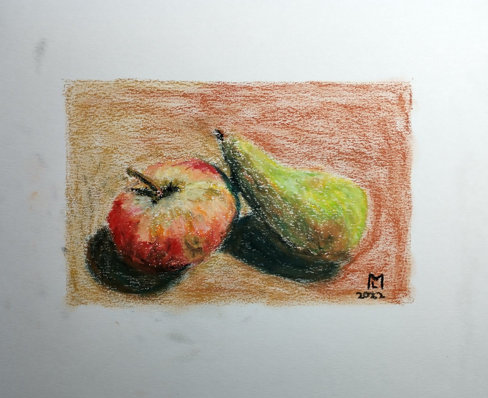

Apple and pear oil pastel sketch
Quick little oil pastel sketch of an apple and a pear, about 5x7 or so, using mungyo gallery soft oil pastels. Roughly 30min. First time I've ever used an artist oil pastel before.

Quick little oil pastel sketch of an apple and a pear, about 5x7 or so, using mungyo gallery soft oil pastels. Roughly 30min. First time I've ever used an artist oil pastel before.
